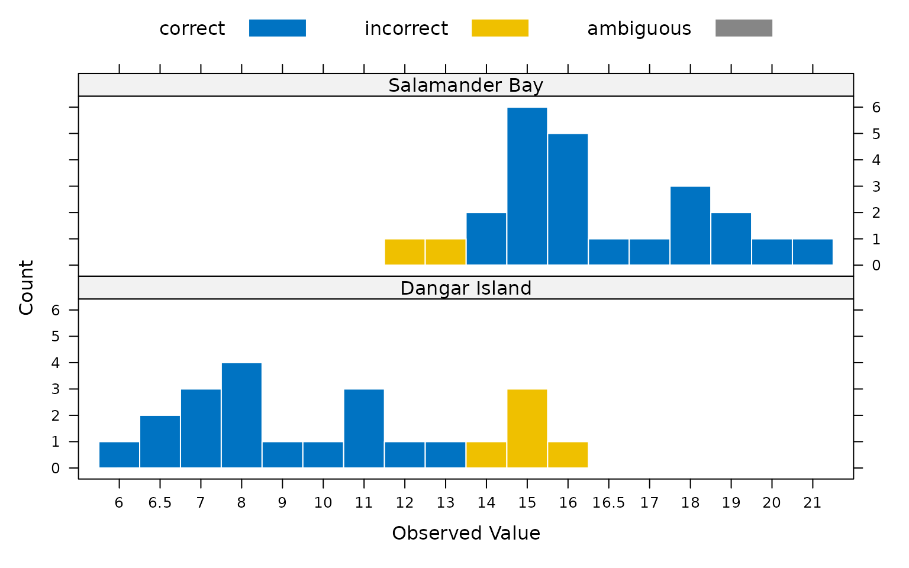
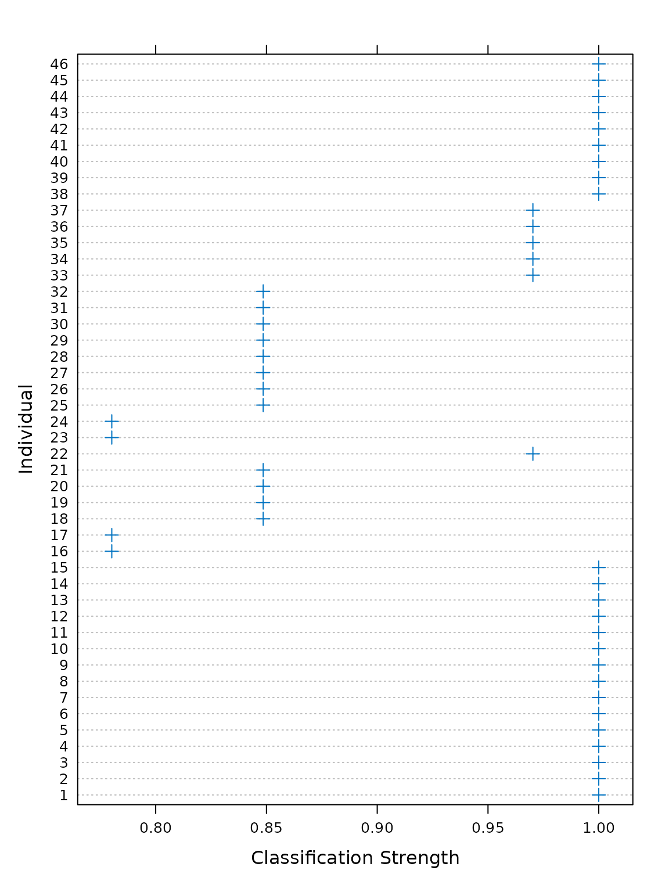

Background
clubpro is an implementation of a subset of the methods
described in Grice (2011) for classification of observations using
binary procrustes rotation. Binary procrustes rotation can be used to
quantify how well observed data can be classified into known categories.
A high degree of classification accuracy indicates that the ordering of
the observed data is well explained by the particular categories
used.
Set up
clubpro can be installed from CRAN with the command
install.packages("clubpro") and loaded in the usual
way.
The plots provided by clubpro use the colour palette
loaded in the current R session. You may specify the colours you wish to
use by passing a vector of colours to palette().
Classifying jellyfish catch location by size
Hand et. at. (1994) provide data on the width and
length in mm of jellyfish caught at two
locations in New South Wales, Australia:
Dangar Island and Salamander Bay.
To quantify how well jellyfish width is predicted by
catch location, binary procrustes rotation can be performed
with clubpro by passing a formula object of
the form observed variable ~ predictor variables(s) and a
data.frame containing the data to the club()
function.
mod <- club(width ~ location, data = jellyfish)The two most important statistics returned by the club()
function are the percentage of correct classifications (PCC), and the
chance-value.
The PCC is the percenatge of observations in the data which are
classified into the correct category. The PCC returned by
club() can be accessed using the pcc()
function.
pcc(mod)
#> [1] 84.78261The chance-value is computed using a randomisation test to determine
how frequently a PCC at least as high as that computed for the observed
ordering of data is found from random reorderings of the data. Calling
the cval() function on an object returned by
club() shows the chance-value of the model. Note that
because the chance-value is computed using a randomisation test, the
value will be slightly different each time the model is run.
cval(mod)
#> [1] 0.015More detailed classification model results can be returned using the
summary() function. Note that values in the
summary output are rounded according to the
digits argument to summary which defaults to
2.
summary(mod)
#> ********** Model Summary **********
#>
#> ----- Classification Results -----
#> Observations:
#> Missing observations: 0
#> Target groups: 2
#> Correctly classified observations: 39
#> Incorrectly classified observations: 7
#> Ambiguously classified observations: 0
#> PCC: 84.78
#> Median classification strength index: 1
#>
#> ----- Randomisation Test Results -----
#> Random reorderings: 1000
#> Minimum random PCC: 50
#> Maximum random PCC: 91.3
#> Chance-value: 0.01The classification of the observed data can be visualised by plotting
the model object using the plot() function.
plot(mod)
For each observation, a classification strength index (CSI) between 0
and 1 is returned. A value of 1 indicates that an observed value was
matched perfectly by the rotation, whereas lower CSI values indicate
that observations were matched less well. The CSI values can be accessed
using the csi() function, or visualised by plotting the
object returned by a call to the csi() function.

The predicted categories determined by the model can be tabulated
using the predict() function. In this case, of the 22
jellyfish caught at Dangar Island, 17 were classified as
having come from Dangar Island and 5 were classified as
having come from Salamander Bay. Of the 24 jellyfish caught
at Salamander Bay, 2 were classified as having come from
Dangar Island and 22 were correctly classified as having
come from Salamander Bay.
predict(mod)
#>
#> Dangar Island Salamander Bay
#> Dangar Island 17 5
#> Salamander Bay 2 22These predictions can be visualised as a mosaic plot by plotting the
object returned by the predict() function.
The same information can be tabulated in terms of prediction accuracy
using the accuracy() function.
accuracy(mod)
#>
#> correct incorrect ambiguous
#> Dangar Island 17 5 0
#> Salamander Bay 22 2 0As with predicted categories, prediction accuracy can also be plotted
in the form of a mosaic plot using plot(accuracy()).

The calculation of the chance-value as the frequency of occurance
PCCs from randomly reordered data at least as high as the PCC of the
observed data ordering can be visualised by plotting the output of the
pcc_replicates() function. Calling the plot()
function on the output of pcc_replicates() produces a
histogram of the PCCs resulting from all random orderings of the data.
The chance value calculated by the model is the frequency with which
PCCs produced from random reorderings of the data are at least as high
as the PCC produced by the observed data ordering, indicated in the plot
by a dashed vertical line.
plot(pcc_replicates(mod))